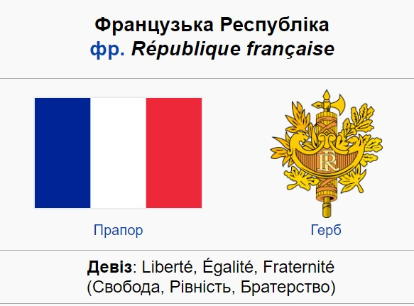

Франція La France

Франція
Oфіційна назва Францу́зька Респу́бліка (фр. La France, République française) — держава на заході Європи, республіка, яка межує на північному сході з Бельгією, Люксембургом і Німеччиною, на сході з Німеччиною, Швейцарією, південному заході з Іспанією й Андоррою, на південному сході з Італією та Монако на півдні омивається Середземним морем, на заході — Атлантичним океаном.
На нинішній території країни люди поселялися здавна. До завоювання території легіонами Юлія Цезаря в 59-51 pp. до н. е. тут із VI ст. до н. е. проживали галли, які говорили кельтськими мовами. Галлія — це стародавня назва Франції. Християнство було запроваджене в І ст. н. е. Римське панування тривало до V ст.
Після 330 р. на країну нападали готи, франки, бургунди. Протягом 465-511 pp. країна була під владою короля франків Хлодвіга. Потім стала частиною імперії Карла Великого (768-814 pp.). Територія західнофранкського королівства, утвореного згідно з Верденським договором 843 p., який розділив імперію Карла Великого на три частини, відповідала нинішній території країни.
Вона стала називатися Францією в X ст.
Національне свято — 14 липня — День взяття Бастилії (1789). Гімн Франції — пісня «Марсельєза», яка була написана в Страсбурзі у 1792 році, а 14 липня проголошена національним гімном. Девізом країни є три всім відомих слова: «Свобода, Рівність, Братерство». Прапор Франції — синьо-біло-червоний. Білий колір символізує королівську владу, а синій і червоний — кольори кокарди національної гвардії Парижа.